Tarini Yadav
Summary:
Hello! I’m Tarini, a recent BCA graduate and aspiring backend developer. 💻 I build secure REST-based web applications using Java, Spring Boot, Spring Security and PostgreSQL, and I deploy them live using Docker and Render. I also practice Data Structures and Algorithms daily and enjoy solving real-world problems. I am looking for an SDE Trainee / Backend Developer role where I can learn from experienced engineers. Let’s connect! 🚀
Education:
- Bachelor of Computer Applications (BCA) | Anant College, Raigarh, Chhattisgarh
- Affiliated with Shaheed Nandkumar Patel University, Raigarh
- Duration: August 2023 - June 2026
- Aggregate: 69.80%
Technical Skills:
Programming & Core Concepts:
- Core Java
- Spring Boot
- Rest APIs
- Spring Security
- JSON Web Token (JWT)
- PostgreSQL
- MySQL
- Docker
- Git
- GitHub
- Spring Data JPA
- JDBC
- SQL
- Python
- C++
- Postman
- Swagger
- Data Structures And Algorithms
Web Development:
- Html
- CSS
- Javascript
Creative Skills:
- Social Media Designing - Canva
Projects:
SocialMediaPlanner
Overview: A full-stack Spring Boot application to schedule, manage and automatically publish social media posts, with user authentication, post ownership enforcement, a background scheduler and live publishing through the Telegram Bot API.
The Vision: Individuals and small teams often struggle to stay consistent across social media channels. I built SocialMediaPlanner to give them one place to plan and schedule their posts.
Features
- User authentication: Spring Security form login with BCrypt password hashing.
- Post ownership enforcement: users can view, edit, delete or publish only their own posts, enforced on the server.
- Automated scheduling: a background @Scheduled job checks every 30 seconds and publishes due posts automatically.
- Live Telegram publishing: scheduled Telegram posts are sent through the Telegram Bot API.
- Multi-platform support: posts can be tagged for LinkedIn, Twitter, Instagram, Telegram or Facebook. Telegram has live publishing; the others are supported in the UI and data model for future extension.
- Input validation: request-level validation (@NotBlank, @Size) with clear field-level error messages.
- Centralized exception handling: a global @ControllerAdvice shows a friendly error page instead of a stack trace.
- Externalized secrets: database credentials and the bot token come from environment variables.
- Platform filtering and pagination on post history.
Tech Stack
| Layer | Technology |
|---|---|
| Language | Java 21 |
| Framework | Spring Boot |
| Security | Spring Security, BCrypt |
| Persistence | Spring Data JPA + Hibernate |
| Database | PostgreSQL (Neon) |
| Frontend | Thymeleaf, Bootstrap 5 |
| Integration | Telegram Bot API |
| Deployment | Render (Docker) |
| Build | Maven |
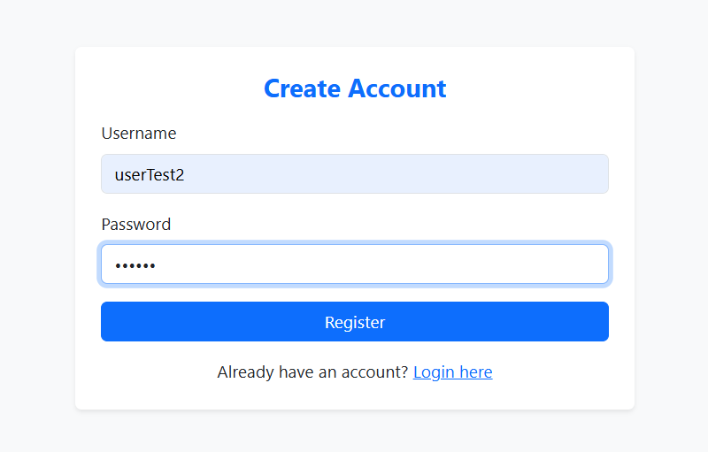
Caption: Registration: every user creates their own account, with passwords stored using BCrypt hashing.
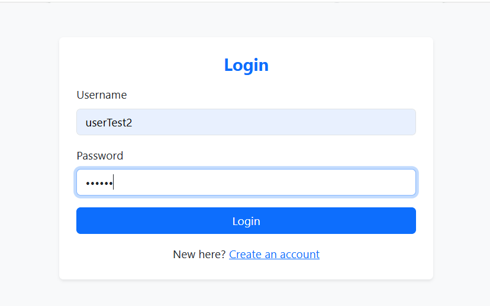
Caption: Login: form-based authentication handled by Spring Security.
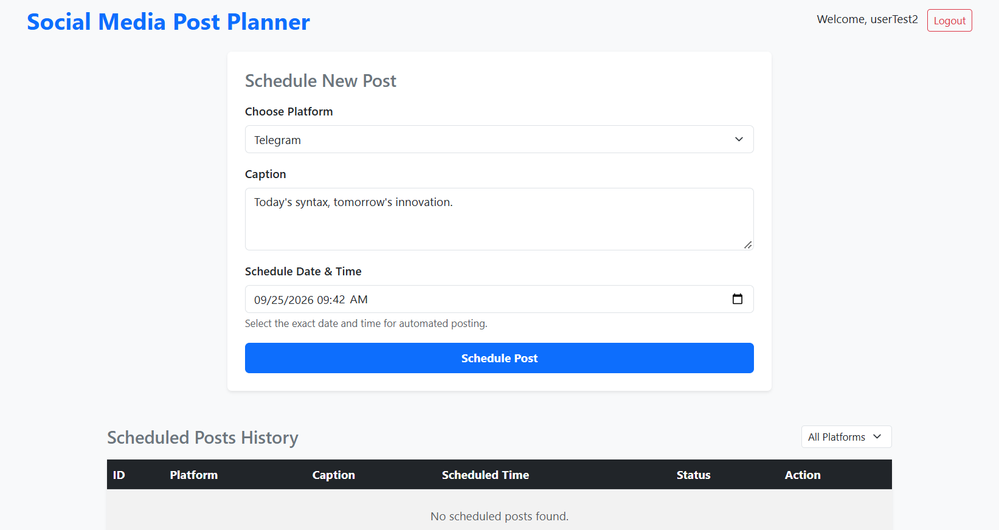
Caption: Scheduling: choose a platform, write a caption and pick the exact date and time for automated posting.
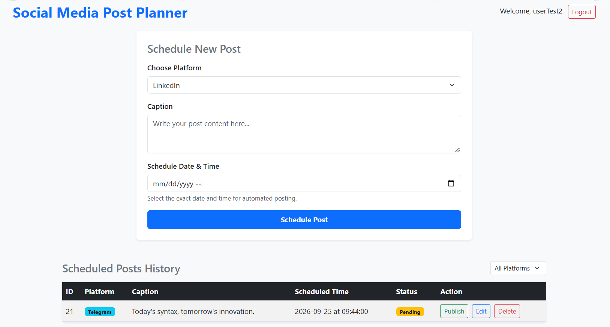
Caption: Post history: each post shows its status and can be published, edited or deleted by its owner.
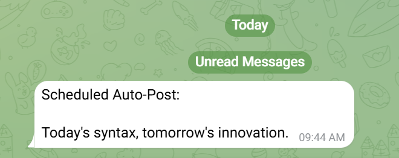
Caption: Live publishing: the background scheduler sent the post to Telegram automatically at the scheduled time.
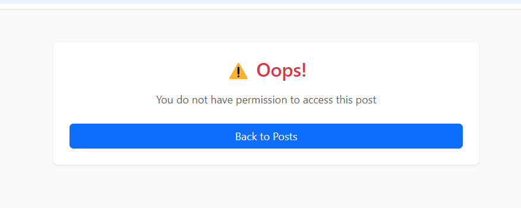
Caption: Ownership protection: accessing another user's post is blocked on the server and shows a friendly error page.
Spring Boot Login Demo: Secure Authentication System
Overview: A secure REST API built with Spring Boot featuring JWT-based stateless authentication, role-based access control and brute-force protection. It started as a basic login/register demo and was extended step by step into a security-focused API, deployed live on Render.
Features
- Password security: BCrypt hashing; passwords are never stored or logged in plain text.
- Spring Security: endpoint-level access control with a custom SecurityFilterChain.
- JWT authentication: stateless signed tokens issued on login, with no server-side sessions.
- Role-based authorization: USER and ADMIN roles; roles are always assigned server-side, never by the client.
- Input validation: @Valid, @NotBlank and @Size with clean, structured error responses.
- Centralized exception handling: a global @RestControllerAdvice so no stack traces reach the client.
- Brute-force protection: account locks for 5 minutes after 5 failed login attempts.
- Externalized secrets: database credentials and the JWT secret come from environment variables.
- Interactive API docs with OpenAPI / Swagger UI.
API Endpoints
| Method | Endpoint | Access |
|---|---|---|
| POST | /api/register | Public |
| POST | /api/login | Public (returns JWT) |
| GET | /api/profile | Authenticated |
| GET | /api/admin/dashboard | ADMIN only |
Tech Stack
| Layer | Technology |
|---|---|
| Language | Java 21 |
| Framework | Spring Boot |
| Security | Spring Security, JJWT |
| Persistence | Spring Data JPA + Hibernate |
| Database | PostgreSQL (Neon) |
| API Docs | springdoc-openapi (Swagger UI) |
| Deployment | Render (Docker) |
| Build | Maven |
Live Demo | Swagger API Docs | GitHub Repo
Hosted on a free tier, so the first load can take 1-2 minutes.
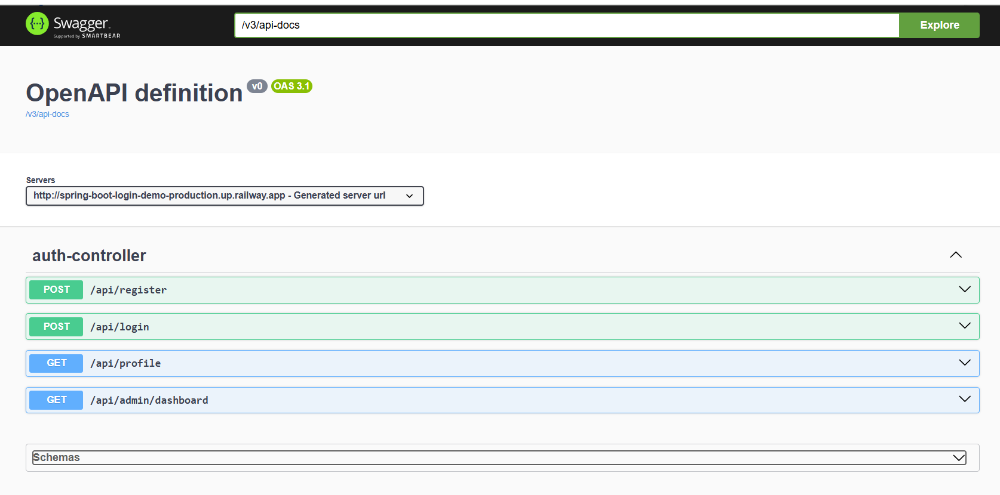
Caption: API documentation: interactive Swagger UI generated from the codebase.
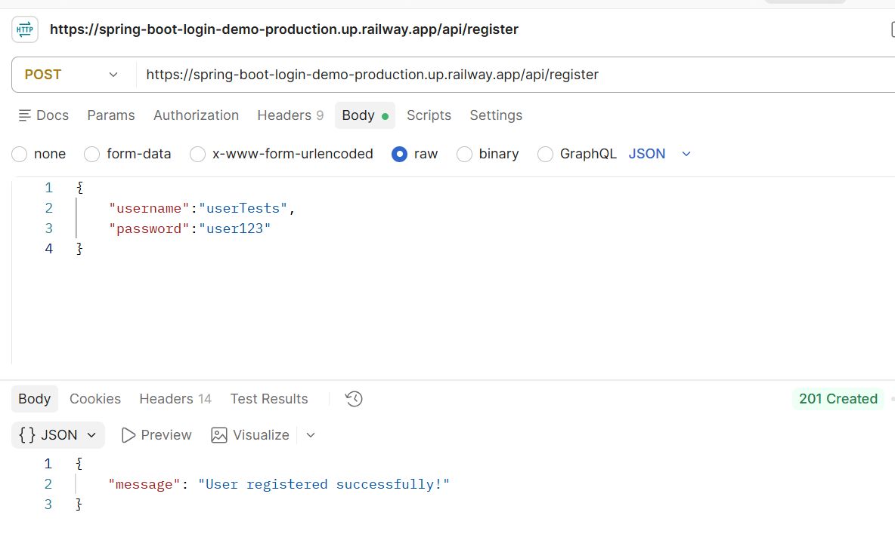
Caption: Registration: a new user is created successfully (201 Created).
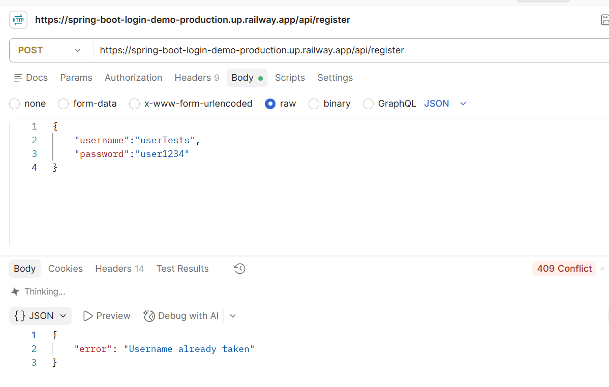
Caption: Duplicate username: registration is rejected with 409 Conflict.
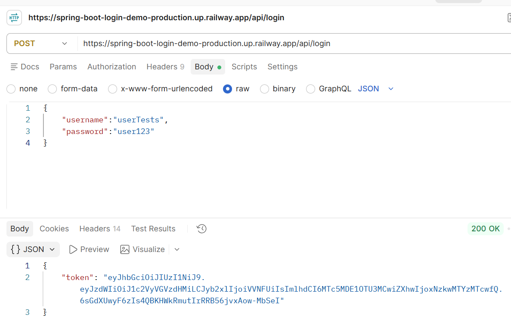
Caption: Login: valid credentials return a signed JWT (200 OK).

Caption: Wrong password: login fails with 401 Unauthorized.
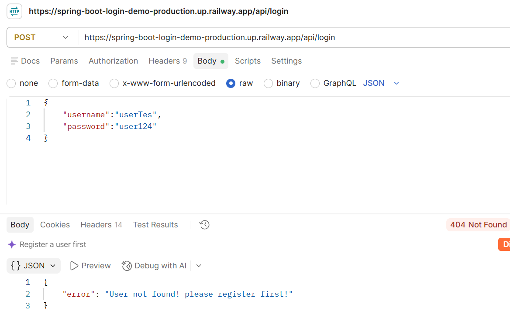
Caption: Unknown user: login fails with 404 Not Found.
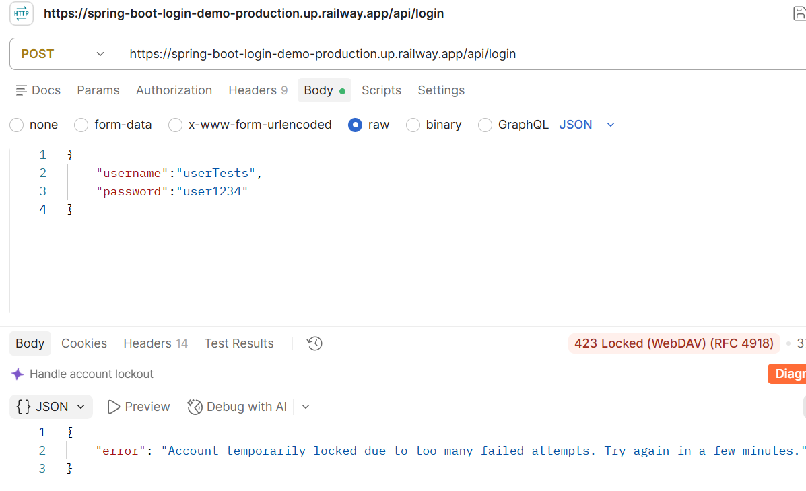
Caption: Brute-force protection: the account is locked after 5 failed attempts (423 Locked).
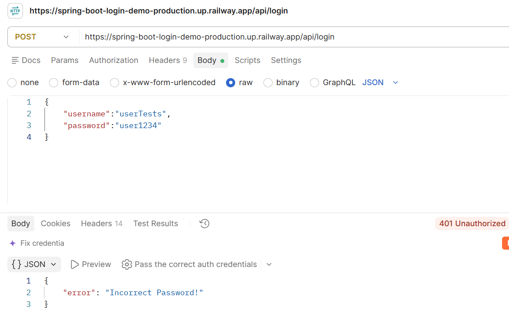
Caption: Protected route: accessing the profile endpoint without a token returns 401 Unauthorized.
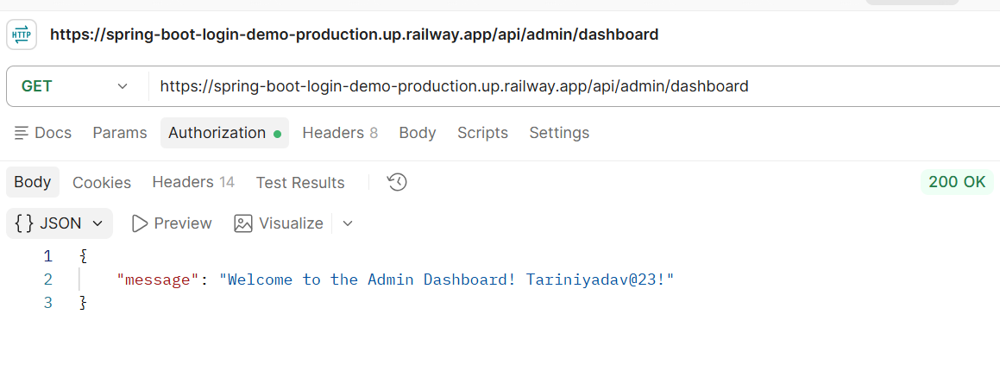
Caption: Role-based access: the admin dashboard opens with a valid ADMIN token (200 OK).
Earlier Version Demo: Social Media Planner
Note: This video shows an earlier version of SocialMediaPlanner that I built in Eclipse, before I added user authentication, post ownership checks, live Telegram publishing and cloud deployment with Docker on Render. The current version is described above.